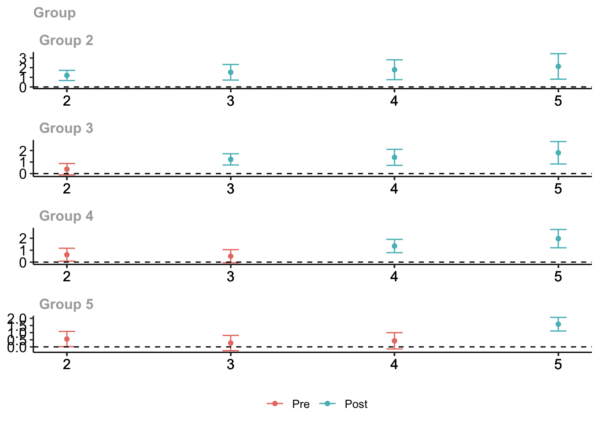
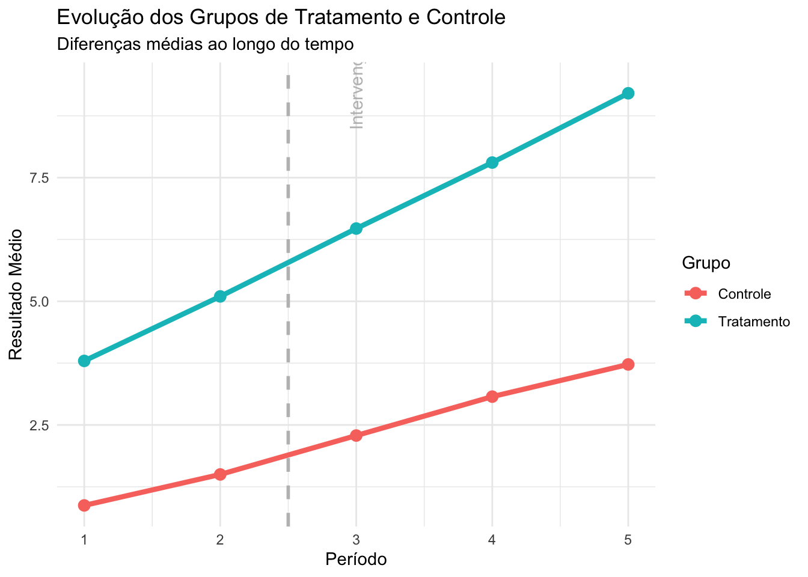

Continuando nossa busca por uma pesquisa social com design mais próximo de um experimento natural ou quasi-experimento, uma das técnicas mais populares é o diff–in-diff. Assim como o PSM, se trata de uma tentativa de simular um estudo experimental usando dados de estudos observacionais.
A técnica se baseia em estudar o efeito diferencial de um tratamento em uma variável de resultado, comparando as mudanças ao longo do tempo na variável resposta com a mudança média ao longo do tempo no grupo de controle.
Para aplicar o DiD precisamos de dados em painel, medindo as diferenças na variável resposta de pelo menos dois períodos para os grupos de tratamento e controle.
library(ggplot2)# Criar dados fictíciosdados <-data.frame(Grupo =rep(c("Controle", "Tratamento"), each =2),Periodo =rep(c("Antes", "Depois"), times =2),Resultado =c(5, 5.5, 5, 7) # Controle não tratado, Tratamento impactado)dados$Grupo_Periodo <-paste(dados$Grupo, dados$Periodo, sep ="-")ggplot(dados, aes(x = Periodo, y = Resultado, group = Grupo, color = Grupo)) +geom_line(size =1) +geom_point(size =3) +labs(title ="Diferenças em Diferenças",subtitle ="Comparação entre grupos Controle e Tratamento",x ="Período",y ="Resultado",color ="Grupo" ) +theme_minimal() +geom_vline(xintercept =1.5, linetype ="dashed", color ="grey") +annotate("text", x =1.25, y =6, label ="Intervenção", color ="grey", angle =90)
Warning: Using `size` aesthetic for lines was deprecated in ggplot2 3.4.0.
ℹ Please use `linewidth` instead.
\(( Y_{it})\): Resultado observado para o indivíduo \((i)\) no tempo \((t)\);
\((Treat_i)\): Indica se o grupo \((i)\) foi tratado (1) ou não (0);
\((Post_t)\): Indica o período após a intervenção (1) ou antes (0);
\((Treat_i\times Post_t )\): Interação capturando o efeito diferencial do tratamento.
O \(\beta\) indica a diferença inicial associada à variável de tratamento.
O \(\gamma\) indica o impacto diferencial do tratamento em cada período
O \(\delta\) indica o impacto diferencial do tratamento em cada período
Vantagens e desvantagens
DiD consegue controlar fatores latentes que são constantes no tempo
Tem fácil implementação se houver disponibilidade de dados em painel
Normalmente os dados antes são difíceis de mensurar caso não haja planejamento prévio ou não seja possível utilizar dados secundários para avaliar o efeito do tratamento
É bastante sensível a efeitos externos que afetam um dos grupos ou um período
Exemplo
Vamos executar um exemplo com o pacote did`. Depois de instalar, vamos simular alguns dados com exemplos para 5 períodos. Esse primeiro passo serve apenas para fins didáticos, já que com dados reais, não precisariamos gerar dados artificiais.
library(did)# Configurar os parâmetros de simulaçãosim_params <-reset.sim(time.periods =5, # Número de períodos de tempon =1000, # Número de observaçõesipw =TRUE, # Compatível com métodos de ponderação (IPW)reg =TRUE# Compatível com métodos de regressão)# Gerar os dados simulados com build_sim_datasetdata <-build_sim_dataset(sp_list = sim_params, panel =TRUE)# Visualizar as primeiras linhas do conjunto de dadoshead(data)
Os dados gerados apresentam os grupos formados a partir do momento em que começaram a ser tratados, tendo o grupo 1 como controle e os demais definidos pelo período em que começaram o tratamento. X e Y já correspondem as diferenças entre tratados e não tratados.
O segundo passo é ajustar o modelo de DiD usando os dados da simulação e calcular o ATT.
O ATT (Average Treatment Effect on the Treated) mede o impacto médio de uma intervenção sobre os indivíduos tratados, ajustado para diferenças entre os grupos de tratamento e controle.
O cálculo no contexto de Diferenças em Diferenças pode ser expresso como:
\(\bar{Y}_{tratados, Pós}\) : Média dos resultados para os tratados após o tratamento.
\(\bar{Y}-{tratados, Pré}\): Média dos resultados para os tratados antes do tratamento.
\(\bar{Y}_{controle, Pós}\): Média dos resultados para os controles após o tratamento.
\(\bar{Y}_{controle, Pré}\): Média dos resultados para os controles antes do tratamento.
# Ajustar o modelo utilizando att_gtatt_gt_results <-att_gt(yname ="Y", # Nome da variável dependentetname ="period", # Nome da variável de períodoidname ="id", # Nome da variável identificadoragname ="G", # Nome da variável que indica o grupo de tratamentodata = data # Dados simulados)# Resumo dos resultadossummary(att_gt_results)
Avaliando os resultados por grupo, vemos que no Grupo 2 o resultado é significativo. Temos ATT (2,2) = 1,23 no início com IC [0,70;1,77] e no final com ATT (2,5) = 1,58 com IC [0,26; 2,91]. Podemos concluir que o tratamento causa impacto no grupo 2 com o tempo. Para cada grupo subsequente, esperamos que o impacto do tratamento seja notado a partir do momento em que é tratado e que seja maior ao longo do tempo. Esse comportamento do ATT normalmente reflete a suposição do estudo.
Vamos visualizar os resultados por um gráfico.
ggdid(att_gt_results)

A visualização indica o efeito do tratamento de cada grupo ao longo do tempo. Podemos perceber o efeito positivo do impacto em cada grupo tratado, comparando com os momento pré e pós tratamento. Com outra visualização, podemos melhor mais a interpretabilidade, comparando com o controle.
library(dplyr)
Attaching package: 'dplyr'
The following objects are masked from 'package:stats':
filter, lag
The following objects are masked from 'package:base':
intersect, setdiff, setequal, union
library(ggplot2)# Agrupar e calcular médias estimadasresults_summary <- data %>%group_by(treat, period) %>%summarise(mean_Y =mean(Y), .groups ="drop") %>%mutate(group =ifelse(treat ==1, "Tratamento", "Controle"))# Gráfico com médias dos grupos de tratamento e controleggplot(results_summary, aes(x = period, y = mean_Y, group = group, color = group)) +geom_line(size =1.5) +geom_point(size =3) +labs(title ="Evolução dos Grupos de Tratamento e Controle",subtitle ="Diferenças médias ao longo do tempo",x ="Período",y ="Resultado Médio",color ="Grupo" ) +scale_x_continuous(breaks =unique(results_summary$period)) +theme_minimal() +geom_vline(xintercept =2.5, linetype ="dashed", color ="grey", size =1) +annotate("text", x =3, y =max(results_summary$mean_Y) +0.2, label ="Intervenção", color ="grey", angle =90)

Para treinar
Neste link você vai encontrar outro exemplo no R, sem o uso do pacote did. Podemos obter a DiD, representando o impacto do tratamento sobre os tratados. <https://www.princeton.edu/~otorres/DID101R.pdf>
Para aprofundamento, aqui temos uma replicação no R de um estudo que utiliza DiD, partindo desde a limpeza dos dados, até verificações de premissas importantes para validar a análise. <https://rpubs.com/phle/r_tutorial_difference_in_differences>